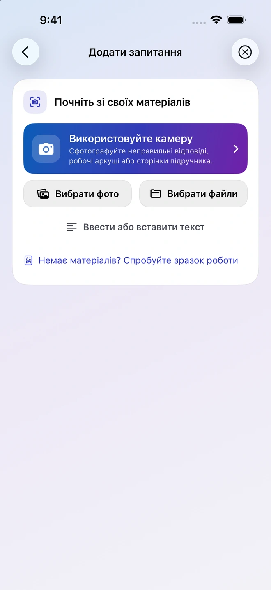
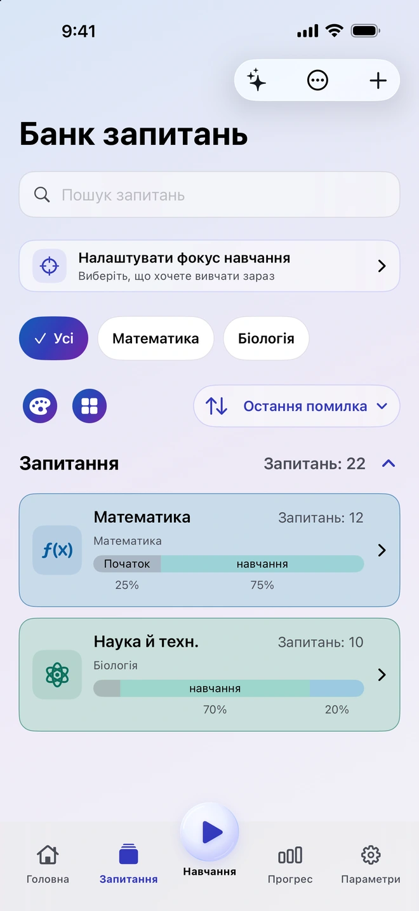
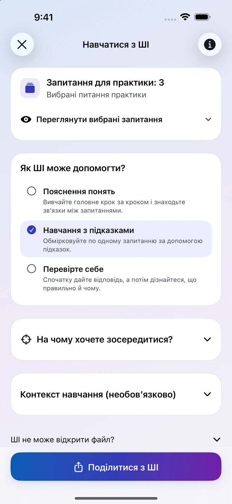
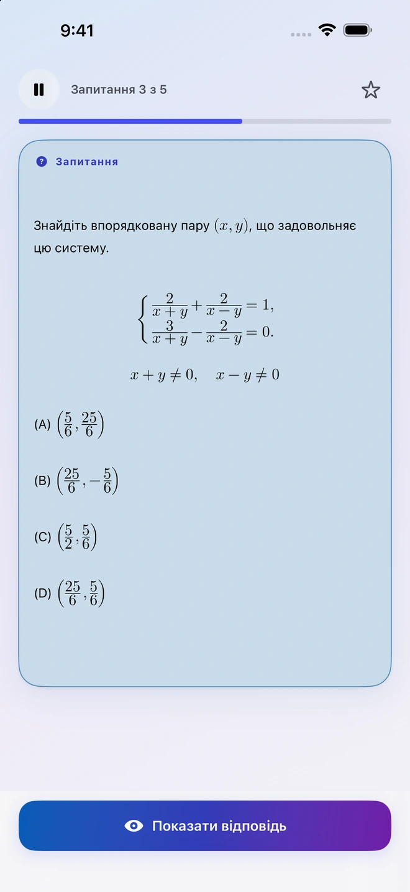
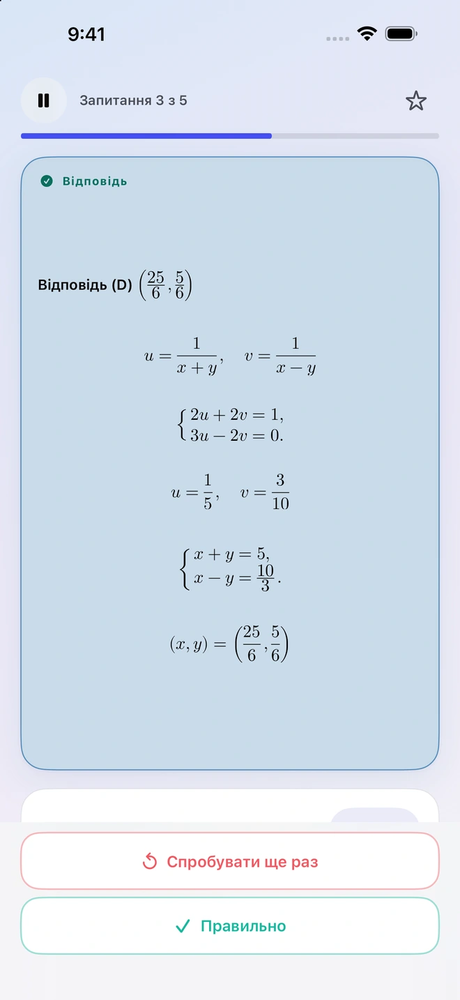
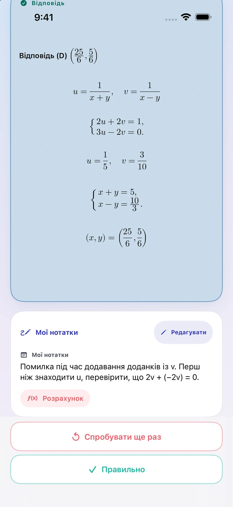
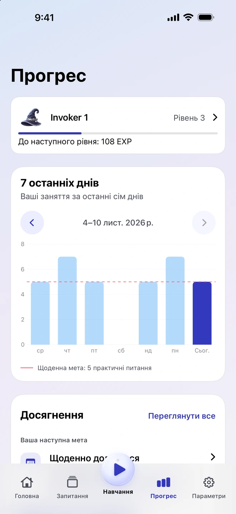

Створюйте запитання зі своїх матеріалів
Додайте фото, PDF, документ або нотатку. Quiz Invoker підготує матеріали й інструкції для вибраного вами сумісного стороннього застосунку зі ШІ. Перевірте отримані запитання та імпортуйте їх у свій банк.
Застосунок для навчання на iPhone
Почніть зі сторінки підручника, нотатки чи завдання, у якому помилилися. Додайте матеріал у Quiz Invoker, перевірте підготовлені запитання й збережіть ті, до яких хочете повернутися.
Як це працює

Збирайте важливі запитання й повертайтеся до них, коли потрібно повторити матеріал.
Додайте фото, PDF, документ або нотатку. Quiz Invoker підготує матеріали й інструкції для вибраного вами сумісного стороннього застосунку зі ШІ. Перевірте отримані запитання та імпортуйте їх у свій банк.
Поділіться вибраними запитаннями з потрібним вам стороннім застосунком зі ШІ. Попросіть пояснити тему, давати підказки по одній або перевірити ваше розуміння. Ви самі обираєте, які файли й нотатки передати.

Спробуйте розв’язати завдання самостійно. Далі перегляньте відповідь та оцініть свій результат. Запишіть, що було складно, щоб повернутися до цього під час наступного заняття.


На графіку за сім днів видно недавні заняття й денну ціль. Відкрийте нотатки до запитання, щоб пригадати хід розв’язання.


Упорядковуйте запитання й навчайтеся офлайн без облікового запису Quiz Invoker. Файли готуються на вашому пристрої. Матеріали, якими ви вирішили поділитися, обробляє вибраний сторонній застосунок зі ШІ.